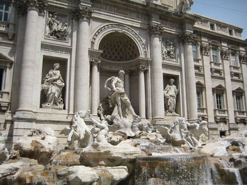

ROOMA
Ikuinen kaupunki
Rooman ravintolat ja baarit
Roomassa on erittäin hyvä ostosmahdollisuudet. Rooman keskustassa on laaja kirjo kauppoja aina huippubrändien lippulaivaliikkeistä pieniin ja edullisiin sivukujien putiikeihin.
La Pergola on Rooman ehkä tunnetuin ravintola. Se tarjoilee huippuluokan fine dining-elämyksen vaativallekin kulinaristille. Tämä kolme Michelin tähteä omaava ravintola on niin suuosittu, että pöytävaraus kannattaa tehdä jo hyvissä ajoin ennen matkaa.
Osteria Del Sostegno on laadukas, silti kohtuuhintainen ja mikä on aina hyvä merkki, paikka on paikallisten suosiossa.
La Fontana di Venere löytyy läheltä Fontana di Treviä. Sieltä löydät hyvää perusruokaa.
© copyright Roomaan.fi | kaikki oikeudet pidätetään